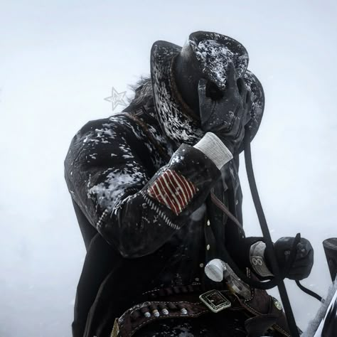
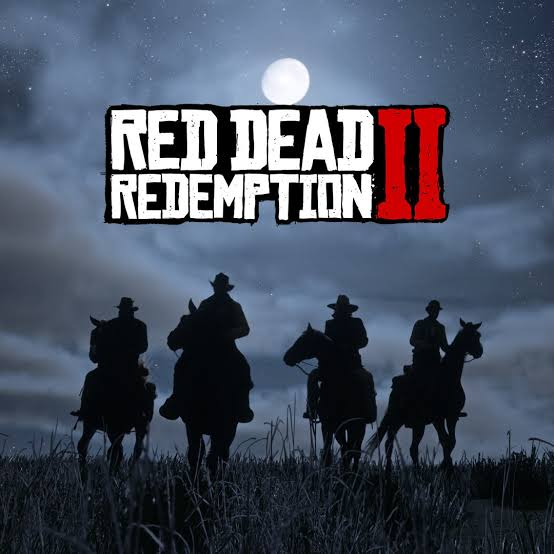

ACHIEVEMENTS
STORY
Friends With Benefits-Complete a Companion Activity in each camp(bronze)
Artificial Intelligence-Discover the fate of Marko Dragic(bronze)
Western Stranger-Complete 10 Stranger mission strands(bronze)
Lending a Hand-Complete all optional Honor story missions(silver)
Gold Rush-Earn 70 Gold Medals in Story missions(silver)
HIDDEN
It's Art-Find a permanent home for the squirrel statue(bronze)
Paying Respects-Find the graves of each of your fallen companions(bronze)
Cowboy Builder-Complete 'A New Jerusalem'(bronze)
Just a Scratch-Complete 'Enter, Pursued by a Memory'(bronze)
Third Time Lucky-Complete 'Goodbye, Dear Friend'(bronze)
Back in the Mud-Complete Chapter 1(bronze)
To Greener Pastures-Complete Chapter 2(bronze)
Settling Feuds-Complete Chapter 3(bronze)
Washed Ashore-Complete Chapter 4(bronze)
No Traitors-Complete Chapter 5(bronze)
Redemption-Complete 'Red Dead Redemption'(silver)
Endless Summer-Complete the Epilogue(gold)
GENRAL
Bountiful-Survive 3 days holding a bounty of $250 in all states(bronze)
Breaking and Entering-Recover the stash from 4 homesteads(bronze)
Errand Boy-Deliver 5 camp companion item requests(bronze)
Extreme Personality-Reach maximum or minimum Honor level(bronze)
Give to the Poor-Donate $250 to the gang tithing box(bronze)
Grin and Bear it-Survive 18 bear attacks and kill the bear each time in Story Mode(bronze)
Hobby Horse-Play all mini games(bronze)
It was THIS Big!-Catch a fish weighing at least 16 lbs (7.3 kg)(bronze)
Locked and Loaded-Upgrade each available component for a single sidearm or longarm weapon(bronze)
Pony Up-Spend $5000 across all shops(bronze)
Self Sufficient-Craft 30 unique items in Story Mode(bronze)
Skin Deep-Skin every species of animal in Story Mode, excluding the 10-foot red boa, dogs, cats, humans, mules, donkeys, horses, sea turtles, and sharks as they cannot be skinned. It also excludes any animals exclusive to Guarma and the Carolina Parakeet.(bronze)
Take From the Rich-Rob or loot $250(bronze)
Trusty Steed-Reach max bonding level with a horse(bronze)
Zoologist-Study every animal across all states in Story Mode, not including Guarma animals or the Carolina Parakeet.(bronze)
Collector's Item-Complete one of the Collectible strands(silver)
Best in the West-Attain 100% completion(gold)
Legend of the West-Awarded when all other trophies have been unlocked(platinium)
RED DEAD ONLINE
Breakout-Complete the Intro(bronze)
All's Fair-Successfully counter a rival Posse's Free roam mission(bronze)
Buckle Up-Achieve 5 gold belt buckles from awards(bronze)
Butchered-Sell 20 items to the Butcher(bronze)
Eventful-Play 5 Free Roam Events(bronze)
Getting Started-Reach Rank 10(bronze)
Gun For Hire-Accept 10 Free Roam missions from characters around the world(bronze)
Home Comforts-Purchase 5 camp improvements(bronze)
Horses for Courses-Concurrently own 5 horses(bronze)
Master Craftsman-Craft 20 items (excluding ammo)(bronze)
Non-Regulation-Craft 25 pieces of ammunition(bronze)
Picked to Perfection-Pick 25 herbs(bronze)
Posse Up-Form a Persistent Posse(bronze)
Series Major-Take part in a Series(bronze)
Strength in Numbers-Complete a Free Roam mission as part of a Posse with at least 2 members(bronze)
The Real Deal-Achieve MVP 3 times (in a round with at least 4 players)(bronze)
Notorious-Reach Rank 50(gold)